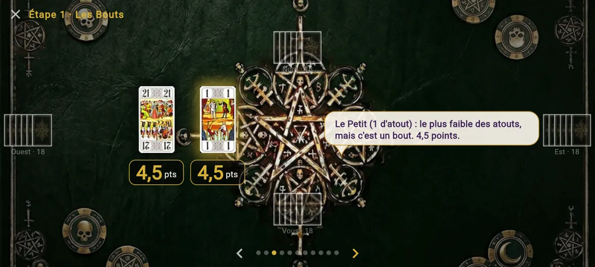

Weihnachten naht: warum nicht gemeinsame Zeit schenken?
Jeden Dezember dieselbe Frage. Welches Geschenk passt zu jemandem, der das Wichtigste hat und angeblich nichts braucht? Dinge stapeln sich, Schokolade verschwindet, Gutscheine verstauben in der Schublade. Erinnerungen bleiben.
Tarot gehört zu den Geschenken, die man erlebt. Nach dem Essen kommt es auf den Tisch, man erklärt der Jüngsten die Regeln und wirft dem Cousin vor, den Petit zu lange behalten zu haben. Das Weihnachten Sonderangebot Tarot-Spiel von Tarot Gothique 2026 setzt hier an: ein Spiel zum Zusammenkommen, auch wenn die Familie im ganzen Land verstreut lebt.
Ein Geschenk, aber für wen genau?
Vor dem Preis zu den Menschen. Ein gutes Geschenk trifft einen genauen Wunsch, und nicht alle am Tisch haben denselben.
Die Großmutter, die Tarot auswendig kennt
Sie kennt Tarot seit sechzig Jahren und lässt sich von düsteren Kulissen nicht beeindrucken. Sie freut sich, ihre Tarot-Runde vom Donnerstag wiederzutreffen, ohne in den Regen zu müssen. Installiere das Spiel mit ihr, lege ihr Konto an, füge ihre Freundinnen hinzu. An Weihnachten wird sie dich schlagen.
Der Jugendliche, der mobil lebt
Ein Regelheft öffnet er nicht, zehn kommentierte Minuten probiert er gern. Weil das mobile Spiel gratis ist, fang dort an: Er entdeckt, hat Spaß, und du weißt, ob ihm das Angebot für den PC passt.
Das Paar mit dem neuen PC
Ein neuer PC sucht seine ersten Aufgaben. Zwei Anfänger lernen Tarot Seite an Seite und setzen sich dann an denselben Tisch. Genug für lange Januarabende.
Das Geschenk unter Kollegen bis zehn Euro
Beim Wichteln gilt oft eine Grenze von zehn Euro. Mit 7,92 € bleibt man darunter, vermeidet Banales und überreicht einen hübschen Umschlag statt eines sperrigen Pakets.

Das Angebot zum Jahresende in Zahlen
Der übliche Preis für das PC-Spiel unter Windows beträgt 9,90 €, einmalig. Der Sonderpreis zu Weihnachten senkt ihn auf 7,92 €. Auch die Geschenke wachsen: 200.000 Jetons, vier Kartenrücken und zwei Tischtücher, dazu zwölf Monate freier Eintritt zu den Wettbewerben am Wochenende.
Das Losungswort besteht aus zwei Wörtern, erklärt in der Anleitung zum Code. Das Angebot endet am 31. Dezember 2026 vor Mitternacht, Pariser Zeit.
Ein Sonderangebot, kein Wunder: bleiben wir ehrlich
Zwei Vorteile gelten im Spiel das ganze Jahr, nicht nur zu Weihnachten: keine Werbung unter Windows und zeitlich unbegrenzte Aktualisierungen. Wir nennen sie, damit du fair urteilen kannst, nicht um die Liste zu verlängern.
PC-Spiel bezahlt, mobiles Spiel gratis: der Unterschied
Das Spiel für den PC wird installiert, nutzt den großen Bildschirm und bleibt werbefrei. Das mobile Spiel startet kostenlos im Browser, mit Werbung nach den Runden. Beide teilen ein Profil: Freunde, Jetons und Fortschritte wandern vom PC aufs mobile Gerät mit.
Das Geschenk bestellen, ohne falschen Ton
Eine Bestellung zu Weihnachten geht schnell, manchmal zu schnell. Diese Reihenfolge erspart Ärger.
Eine Woche vor Weihnachten: nach der E-Mail-Adresse fragen
Alles hängt daran. Die Boni gehen an das Profil, dessen bestätigte Adresse der des Kaufs entspricht. Frag beiläufig oder mit Hilfe eines Komplizen. Wer noch kein Profil hat, eröffnet es später mit derselben Adresse: Das Geschenk wartet dort.
Am Tag selbst: die Stunde für das Spiel wählen
Die Nachricht mit dem Link geht nach bestätigter Zahlung sofort ab. Bezahle im letzten Moment, wenn dir das Geschenk als Überraschung wichtig ist, etwa beim Abräumen. Der Link gilt sieben Tage und erlaubt fünf Downloads; vergessen, fordert man ihn auf der Website neu an.
Nach dem Angebot: den Beleg aufheben
Der E-Mail liegt ein PDF bei. Es erreicht den Empfänger, samt Betrag. Stört dich das, sag Bescheid oder bestelle an deine eigene Adresse und nutze dein Konto für gemeinsame Abende.
Was ein PC für Tarot braucht
Windows 10 oder 11 mit 64 Bit, zwei Kerne, mindestens vier Gigabyte Speicher. Ein neuerer Büro-PC genügt. Im Zweifel öffne zuerst das Gratis-Spiel am PC oder mobil: der beste Test.
Der erste Tarot-Abend, Schritt für Schritt
Das Geschenk ist offen, alle schauen auf den Bildschirm. Jetzt wirkt der Zauber, oder nicht. Einige Tipps für das Gelingen.

Mit dem erklärten Spiel beginnen
Starte am PC oder mobil die Tarot-Lektion über den Wert der Karten. In zwei Minuten wissen Neulinge, dass drei Karten mehr zählen: der Petit, die 21 und die Excuse. Weiter geht es mit einer geführten Runde im Angriff, in der die empfohlene Karte blinkt. Die Schule verlangt weder Einsatz noch Rangliste.

Als Team vor einem PC
Schließt den PC an den Fernseher an und entscheidet gemeinsam. Reizen? Wen rufen? Die Debatten sind die Partie wert. Kinder lernen, wenn die Älteren einander widersprechen.
Mobil weiter im Zug nach Hause
Die Gäste fahren heim, die Revanche bleibt. Ein privater Tisch versammelt dieselben Gegner, jeden auf seinem Platz. So wird das Geschenk zur Gewohnheit.
Die Flamme nach Weihnachten erhalten
Vereinbart einen Tarot-Termin, etwa Sonntag am späten Nachmittag. Notiert denkwürdige Ergebnisse, erfindet ein Pfand für den Letzten. Wer sich mit Fremden messen will, findet im Spiel ein wöchentliches Tarot-Turnier.
Tarot-Spiel als Geschenk im Team: Ideen zur Inszenierung
Eine Datei lässt sich nicht auspacken. Mit etwas Karton und viel Schalk wird trotzdem ein echtes Geschenk zu Weihnachten daraus.
Der Umschlag mit Tarot-Karten
Steck drei Karten eines alten Tarot-Blatts in einen Umschlag: Petit, 21, Excuse. Auf jeder Rückseite ein Wort. Zusammen ergeben sie den Namen im Spiel und die Uhrzeit der ersten Partie.
Ein Kalender zu Weihnachten, mobil verschickt
Vom 20. bis 24. Dezember schickst du jeden Abend einen Hinweis mobil: eine Tarot-Regel, ein Rätsel, ein Bild. Die letzte Nachricht verrät das Geschenk, fünfmal ausgekostet.
Die Tarot-Wette der Generationen
Zwei Teams vor dem Rechner, Alt gegen Jung. Drei Runden, ein symbolischer Preis, unter der Woche die Revanche, mobil.
Was man vor dem Kauf eines digitalen Spiels wissen sollte
Ein Download folgt anderen Regeln als ein zu großer Pullover. Wer sofortigen Zugang verlangt, verliert das Widerrufsrecht mit dem Start des Downloads. Solange der Link unbenutzt ist, bleiben vierzehn Tage. Näheres in den Verkaufsbedingungen (auf Französisch), auch zur Schlichtungsstelle.
Die Grenzen im Angebot, ohne Kleingedrucktes
Dekorationen wählt man unter denen, die dem Profil fehlen; ein gut ausgestatteter Sammler erhält also weniger. Die Wahl von vier Rücken und zwei Tüchern setzt die neueste Version im Spiel voraus. Das Angebot gilt nicht für den Laden im Spiel und die App-Stores.
Für Anfänger im Tarot: drei häufige Fragen
Kann man allein lernen? Ja, die Gegner des Computers verlieren nie die Geduld.
Sind die Karten traditionell? Ja, die des französischen Kartentarots; eine Deutung gibt es nur als Belohnung nach einem Sieg.
Wie lange dauert eine Runde? Etwa zehn Minuten, man kann also aufhören, wenn der Nachtisch kommt.
Ein Geschenk ohne Verpflichtung
Keine automatische Verlängerung, kein gespeichertes Zahlungsmittel. Man nutzt es viel, wenig oder wartet auf den Sommer. Das Spiel verschwindet nicht.
Angebot, Spiel, Tarot: das letzte Wort
Wer Tarot-Karten als Geschenk überreicht, sagt: Ich möchte Zeit mit dir verbringen. Das Medium zählt weniger als die Einladung. Gefällt sie dir, gilt das Angebot zu Weihnachten bis 31. Dezember, und ein ganzes Jahr bleibt für die Revanche.
Ratgeber vom Entwickler, mit Hilfe künstlicher Intelligenz für Text und Kulissen. Die gezeigten Bildschirme sind auf Französisch.